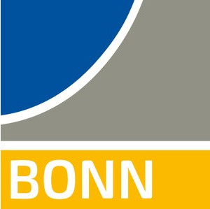
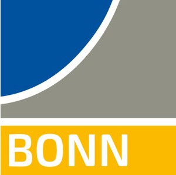
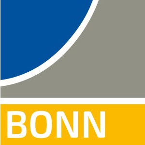

Bridging Sensing, Planning and Interaction
We invite high-quality submissions to the Active Perception Workshop at IROS 2025. We welcome contributions that advance the state of the art in active perception, planning, and interaction for intelligent robotic systems.
The workshop welcomes short paper and demo submissions (ranging from 2 to 8 pages), which will undergo committee review to ensure high-quality contributions. Accepted submissions will be presented as posters and published on the workshop website. Selected best papers will have the possibility to do a spotlight presentation. Previously published papers are also welcome; however, they will not be eligible for awards and will be limited to poster session.
Submission Portal: OpenReview from 1st of July 2025, 00:00 AoE
1st Call Submission Deadline: 14th of August 2025, 23:59
AoE
Notification of Acceptance: 1st of September 2025
2nd Call Submission Deadline: 21st of September 2025, 23:59
AoE
Notification of Acceptance: 5th of October 2025
For questions, reach out to the organizers at activepws@gmail.com.
